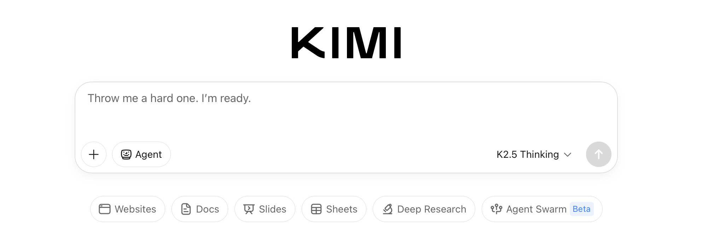
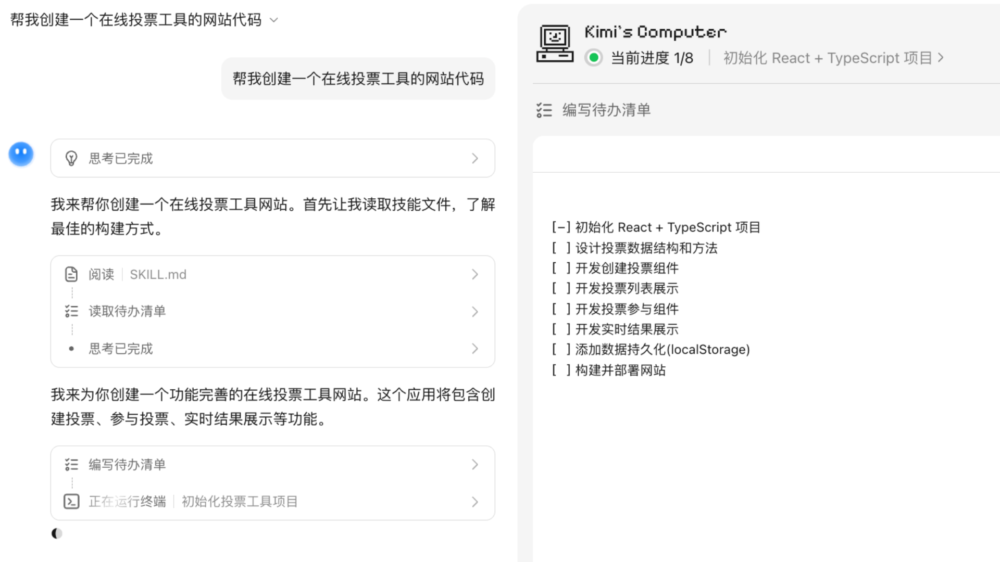

用 Kimi 大半年，踩过的那些"看着简单其实有坑"的瞬间
从模型切换到额度消耗，从文件上传到 Agent 产出物保存——这篇避坑指南整理了我用 Kimi Chat 以来真实踩过的六个坑，每个都有症状、原因和现成解法。
说实话，Kimi 看着就是个 AI 聊天界面，但用了大半年才发现，它藏着好几个容易翻船的地方。它的官网直接打开浏览器就能用。最夸张的一次是我以为额度突然被人盗刷了，查了半小时才发现是 Kimi Work 里一个忘了关掉的定时任务在偷偷跑。今天把这些坑整理下来，希望你别像我一样花冤枉时间。

坑一：切了模型但回答质量没变——Session 吃老模型
症状：输入框上方明明显示「K3」，但 Agent 任务跑出来的结果还是像 K2.6 那样敷衍，复杂推理根本没展开。或者干脆点模型切换按钮半天没反应，界面上模型名就是不肯变。
原因：Kimi 的模型切换不是全局立即生效的。你在顶部切了 K3，当前这个 Session 可能还在沿用之前的模型上下文。另外还有几个常见的卡点：会员权益不够用 K3、credits 余额耗尽后系统自动降级到 K2.6、后台有其他 Agent 任务占了并发槽。
解法：先确认自己账号权益和 credits 余额没问题，然后关掉当前对话、新建一个 Session 再切模型。如果还是不行，直接刷新整个页面。这个问题我踩了好几次，每次都在想「怎么回事」，其实就是 Session 继承了旧模型，新开一个就好。
坑二：文件上传失败——文件名里有特殊字符你注意过吗
症状：PDF 或 Excel 上传进度条走到 100% 之后卡住，或者直接提示「解析失败」。你明明知道文件没坏、格式也在支持列表里，但就是传不上。
原因：Kimi 对文件名比较严格，中文标点、空格、括号、# 这类特殊字符都可能导致上传后解析失败。kimichat文档里列了支持的格式是 PDF、Word、Excel、图片、TXT、Markdown，但文件名本身的合法性是另外一回事。另外单文件上限 100MB、单个 Session 最多 50 个文件，这俩硬限制也经常被忽略。
解法：上传前把文件名改成纯英文或数字，用下划线或连字符分隔就行——比如 report_2026_q3.pdf。超过 100MB 的文件拆成两份传，文件多的话分批开不同 Session。我现在养成的习惯是下载完任何文件先批量重命名再上传，省了很多事。
坑三：credits 突然狂扣——你忘了关掉什么
症状：早上起来一看账户，credits 扣了好几百，但你昨晚根本没跑什么 Agent 任务。最夸张那次我三天没碰 Kimi，扣了将近两千 credits，查了半天才定位到原因。
原因：大概率是以下几种情况之一：从kimichat下载拿到的 Kimi Work 里挂着一个持续运行的定时任务（Cron）、Kimi Claw 在后台偷偷帮你执行自动化操作、OK Computer 那个虚拟电脑没关还在长时运行、或者网络波动导致 Agent 任务意外重试了好几次但你没察觉。
解法：打开账户里的 credits 消耗明细，逐条核对——每条扣除项都会标注对应的任务名和 Session。找到元凶后，不用的 Claw 暂停掉、定时任务频率调到合理值、Agent 任务跑完立刻关掉。绝对不要频繁中断正在执行的 Agent 任务，已经执行的部分照样会计费，白烧 credits。
坑四：Agent 产出物找不到或损坏——Session 删了东西就没了
症状：Agent 任务顺利完成，产出了一份 PPT 或代码项目，你当时没立刻下载。后来回去翻历史对话，发现那个 Session 被你删了，产出物也跟着没了。或者下载下来的 zip 包解压后文件损坏、打不开。
原因：Kimi 云端不会单独保存产出物——它依附于 Session 存在。Session 一删，产出物就没了，没有回收站。另外浏览器偶尔会拦截下载，或者网络波动导致下载不完整。
解法：重要产出物必须立刻下载到本地，不要相信云端能帮你留着。大文件（网站项目、多 PPT）下载完 zip 包后立刻解压检查，有问题直接跟 Kimi 说「把刚才的 PPT 重新生成一下」。我现在的习惯是 Agent 任务完成的第一反应就是点下载、解压、确认文件完整，才关掉对话。
坑五：Agent 任务跑到一半停了——不是它罢工了，是 Token 或网络
症状：长文写作或深度研究跑到 80% 左右突然停住了，进度条不再推进，Kimi 也没有任何回复。等了几分钟还是没动静，以为是服务挂了。
原因：两种最常见的情况。一是 Token 上限到了——单次回答的 Token 用完，Kimi 自动截断输出。二是网络波动导致连接中断，它也不会主动告诉你，就那样挂着。偶尔也可能是 Kimi 服务本身的临时波动，等几分钟自己就好了。
解法：先刷新一下对话界面，然后跟 Kimi 说「继续刚才的回答」。如果不行，开一个新 Session，把任务上下文（比如之前已经写到哪了、目标是什么）简述一下让它接着来。我之前有一篇万字研究报告跑到 90% 断了，用这招在新 Session 里接上续写，比重跑快多了。
坑六：Kimi 不理解你的问题——模型没配对 + 上下文不够
症状：你问了一个复杂的编程问题或文档处理任务，Kimi 给的回答完全不是你想要的方向，或者只输出了纯文字根本没进入 Agent 模式。换个方式问还是答不对。
原因：两个常见的底层问题——你是不是用了 K2.6 但任务需要 K3 的 Agent 能力？ K2.6 只能聊天，不能执行 Agent 任务，提交复杂任务时它要么告诉你需要切模型，要么勉强用聊天模式答但质量天差地别。另外就是你给的上下文不够——只说「帮我写个 API」但没说用什么框架、要什么功能，Kimi 自然抓不住你的真实意图。
解法：提交任何 Agent 级任务之前，先确认模型已经切到 K3（顶部按钮看一眼就行）。然后把背景信息给足——上传参考文件、粘贴需求约束、说清楚目标和格式。我之前经常懒得多说，结果来回反复调整问题方向，反而更费时间。

防坑清单（速查版）
最后整理一份 5 条速查表，每次用之前瞄一眼：
- 切模型必开新 Session，别在旧对话里硬切，继承的上下文会把你坑了
- 上传前先重命名文件，纯英文数字加下划线/连字符，特殊字符一律去掉
- credits 消耗明细定期看，定时任务和 Claw 不用就暂停，别让后台偷偷烧钱
- Agent 产出物立刻下载解压，Session 一删就没，云端不是备份地
- 复杂任务先确认模型是 K3，K2.6 只能聊天不能执行，白浪费时间白烧钱
知道这些坑之后，Kimi 其实相当省心。它的 Agent 模式真的能帮你省很多事，但前提是别踩这些显而易见但又容易忽略的小陷阱。这套防坑的详细说明我也同步整理了一份，在GitHub、Gitee、GitCode三个仓库都能拿到。